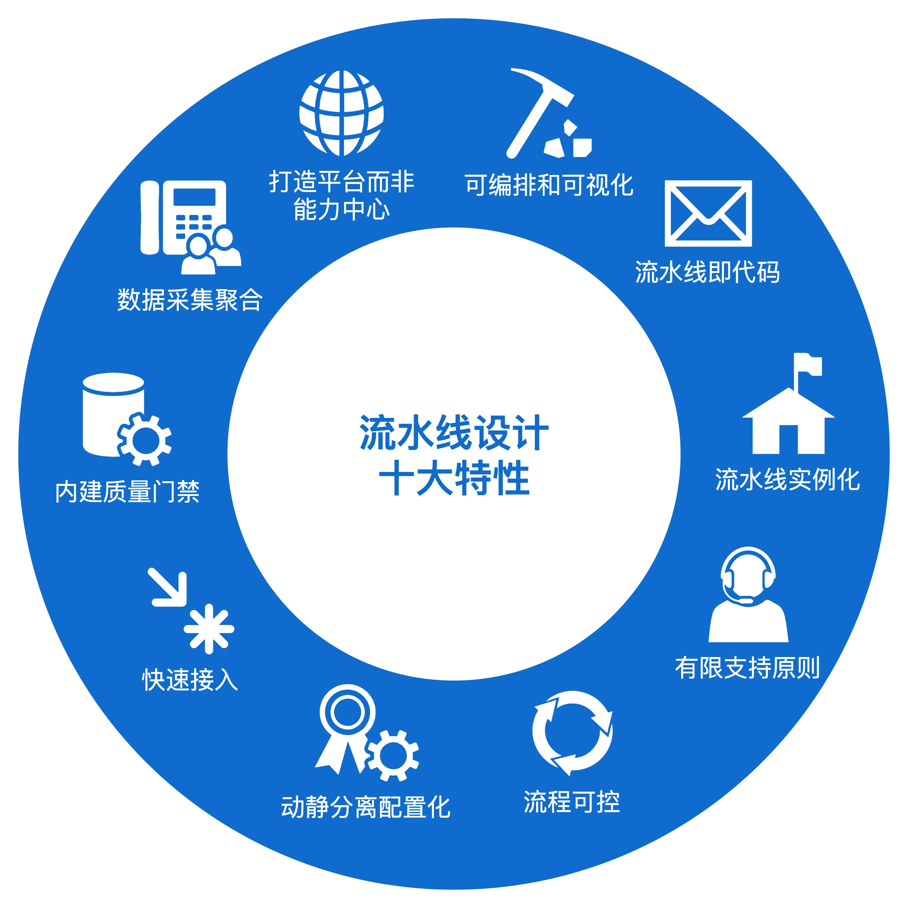
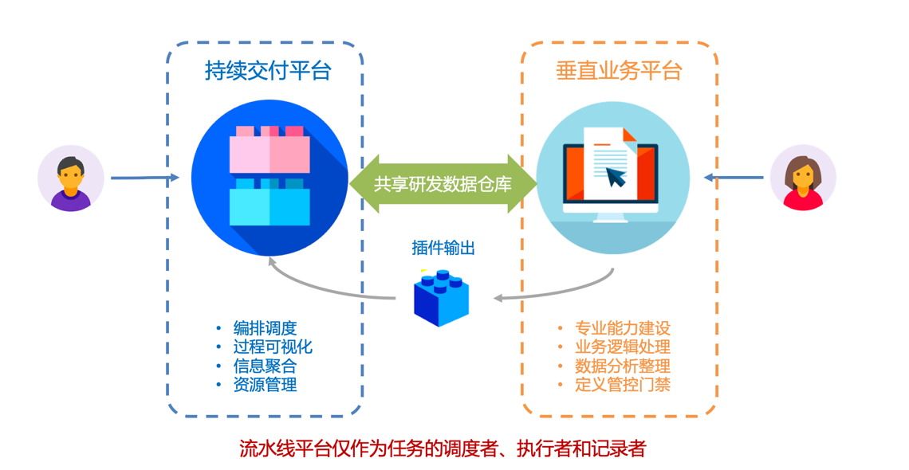
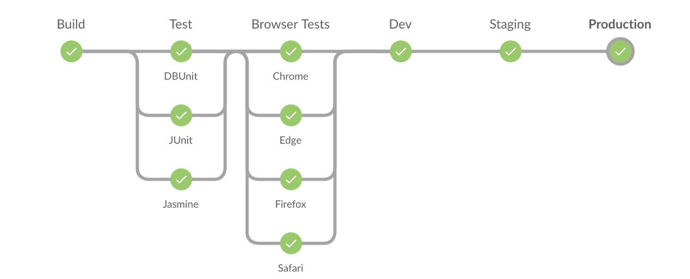

- 00 开篇词 从默默无闻到风靡全球，DevOps究竟有什么魔力？.md.html
- 01 DevOps的“定义”：DevOps究竟要解决什么问题？.md.html
- 02 DevOps的价值：数字化转型时代，DevOps是必选项？.md.html
- 03 DevOps的实施：到底是工具先行还是文化先行？.md.html
- 04 DevOps的衡量：你是否找到了DevOps的实施路线图？.md.html
- 05 价值流分析：关于DevOps转型，我们应该从何处入手？.md.html
- 06 转型之路：企业实施DevOps的常见路径和问题.md.html
- 07 业务敏捷：帮助DevOps快速落地的源动力.md.html
- 08 精益看板（上）：精益驱动的敏捷开发方法.md.html
- 09 精益看板（下）：精益驱动的敏捷开发方法.md.html
- 10 配置管理：最容易被忽视的DevOps工程实践基础.md.html
- 11 分支策略：让研发高效协作的关键要素.md.html
- 12 持续集成：你说的CI和我说的CI是一回事吗？.md.html
- 13 自动化测试：DevOps的阿克琉斯之踵.md.html
- 14 内建质量：丰田和亚马逊给我们的启示.md.html
- 15 技术债务：那些不可忽视的潜在问题.md.html
- 16 环境管理：一切皆代码是一种什么样的体验？.md.html
- 17 部署管理：低风险的部署发布策略.md.html
- 18 混沌工程：软件领域的反脆弱.md.html
- 19 正向度量：如何建立完整的DevOps度量体系？.md.html
- 20 持续改进：PDCA体系和持续改进的意义.md.html
- 21 开源还是自研：企业DevOps平台建设的三个阶段.md.html
- 22 产品设计之道：DevOps产品设计的五个层次.md.html
- 23 持续交付平台：现代流水线必备的十大特征（上）.md.html
- 24 持续交付平台：现代流水线必备的十大特征（下）.md.html
- 25 让数据说话：如何建设企业级数据度量平台？.md.html
- 26 平台产品研发：三个月完成千人规模的产品要怎么做？.md.html
- 27 巨人的肩膀：那些你不能忽视的开源工具.md.html
- 28 迈向云端：云原生应用时代的平台思考.md.html
- 29 向前一步：万人规模企业的DevOps实战转型案例（上）.md.html
- 30 向前一步：万人规模企业的DevOps实战转型案例（下）.md.html
- 期中总结 3个典型问题答疑及如何高效学习 (1).md.html
- 期中总结 3个典型问题答疑及如何高效学习.md.html
- 期末总结 在云时代，如何选择一款合适的流水线工具？.md.html
- 特别放送（一）成为DevOps工程师的必备技能（上）.md.html
- 特别放送（三）学习DevOps不得不了解的经典资料.md.html
- 特别放送（二）成为DevOps工程师的必备技能（下）.md.html
- 特别放送（五）关于DevOps组织和文化的那些趣事儿.md.html
- 特别放送（四）Jenkins产品经理是如何设计产品的？.md.html
- 结束语 持续改进，成就非凡！.md.html
- 捐赠
23 持续交付平台：现代流水线必备的十大特征（上）
你好，我是石雪峰。
作为DevOps工程实践的集大成者和软件交付的“理想国”，持续交付对企业的DevOps落地起到了举足轻重的作用。我接触过的企业全都在建设自己的流水线平台，由此可见，流水线是持续交付中最核心的实践，也是持续交付实践最直接的体现。
那么，如何建设一个现代流水线平台呢？这个平台，应该具备哪些特性呢？
根据我自己在企业内部建设落地流水线平台的经验，以及业界各家公司的平台设计理念，我提取、总结了现代流水线设计的十大特性。
在接下来的两讲中，我会结合平台设计，给你逐一拆解这些特性背后的理念，以及如何把这些理念落地在平台设计中。我把这十个特性汇总在了下面的这张图片里。今天，我先给你介绍下前五个特性。

特性一：打造平台而非能力中心
与其他DevOps平台相比，流水线平台有一个非常典型的特征，那就是，它是唯一一个贯穿软件交付端到端完整流程的平台。正因为这样，流水线平台承载了整个软件交付过程方方面面的能力，比如，持续集成能力、自动化测试能力、部署发布能力，甚至是人工审批的能力等。
那么，我们把软件交付过程中所需要的能力都直接做到流水线平台上，是不是就可以了呢？
这个想法是好的，但是在企业中，这并不具备可操作性。因为软件交付的每一个环节都是一项非常专业的工作，比如，仅仅是自动化测试能力这一项做好，就需要一个具备专业技能的团队的长期投入。
而且，把所有能力都做到流水线平台中，会使平台变得非常臃肿。再说了，我们也很难组建一个这么大的团队，来实现这个想法。
另外，企业的DevOps平台建设并不是一两天的事情。每家企业内部都有很多固有平台，这些平台长期存在，已经成为了团队软件交付日常操作的一部分。如果全部推倒重来，不仅会打破团队的习惯，影响短期效率，还会带来重复建设的巨大成本，这并不利于流水线平台的快速落地。
那么，既然这条路走不通，流水线平台如何定位才比较合理呢？我认为，正确的做法是，将持续交付流水线平台和垂直业务平台分开，并定义彼此的边界。
所谓的垂直业务平台，就是指单一专业领域的能力平台，比如自动化测试平台、代码质量平台、运维发布平台等等，这些也是软件交付团队日常打交道最频繁的平台。
流水线平台只专注于流程编排、过程可视化，并提供底层可复用的基础能力。比如，像是运行资源池、用户权限管控、任务编排调度流程等等。
垂直业务平台则专注于专业能力的建设、一些核心业务的逻辑处理、局部环节的精细化数据管理等。垂直业务平台可以独立对外服务，也可以以插件的形式，将平台能力提供给流水线平台。
这样一来，我们就可以快速复用现有的能力，做到最小成本的建设。随着能力的不断扩展，流水线平台支持的交付流程也会变得非常灵活。
借用《持续交付2.0》中的一句话来说，流水线平台仅作为任务的调度者、执行者和记录者，并不需要侵入垂直业务平台内部。

这样设计的好处很明显。
从流水线平台的角度来看，通过集成和复用现有的垂直业务能力，可以快速拓展能力图谱，满足不同用户的需求。
从垂直业务平台的角度来看，它们可以持续向技术纵深方向发展，把每一块的能力都做精、做透，这有助于企业积累核心竞争力。另外，流水线可以将更多用户导流到平台中，让垂直业务平台接触更多的用户使用场景。
不仅如此，在执行过程中，流水线携带了大量的软件开发过程信息，比如本次任务包含哪些需求，有哪些变更，这些信息可以在第一时间通知垂直业务平台。垂直业务平台拿到这些过程信息之后，可以通过精准测试等手段，大大提升运行效率。这里的核心就是构建一个企业内部DevOps平台的良好生态。
业界很多知名的软件设计都体现了这个思路。比如，Jenkins的插件中心、GitHub的Marketplace。它们背后的理念，都是基于平台，建立一种生态。
我之所以把这个特性放在第一个来介绍，就是因为，这直接决定了流水线平台的定位和后续的设计理念。关于具体怎么设计平台实现能力的快速接入，我会在第八个特性中进行深入介绍。
特性二：可编排和可视化
在现代软件开发中，多种技术栈并存，渐渐成为了一种常态。
举个最简单的例子，对于一个前后端分离的项目来说，前端技术栈和后端技术栈显然是不一样的；对于微服务风格的软件架构来说，每个模块都应该具备持续交付的能力。
所以，传统的标准化软件构建发布路径已经很难满足多样化开发模式的需要了。这样看来，流水线平台作为软件交付的过程载体，流程可编排的能力就变得必不可少了。
所谓的流程可编排能力，就是指用户可以自行定义软件交付过程的每一个步骤，以及各个步骤之间的先后执行顺序。说白了，就是“我的模块我做主，我需要增加哪些交付环节，我自己说了算”。
但是，很多现有的“流水线”平台采用的还是几个“写死”的固定阶段，比如构建、测试、发布，以至于即便有些技术栈不需要进行编译，也不能跳过这个环节。
我之前就见过一家企业，他们把生成版本标签的动作放在了上线检查阶段。我问了之后才知道，这个步骤没有地方可以放了，只能被临时扔在这里。你看，这样一来，整个交付过程看起来的样子和实际的样子可能并不一样，这显然不是可视化所期待的结果。
流程可编排，需要平台前端提供一个可视化的界面，来方便用户定义流水线过程。典型的方式就是，将流水线过程定义为几个阶段，每个阶段按顺序执行。在每个阶段，可以按需添加步骤，这些步骤可以并行执行，也可以串行执行。
前端将编排结果以一种标准化的格式进行保存（一般都是以JSON的形式），传递给后端处理。后端流程引擎需要对用户编排的内容进行翻译处理，并传递给执行器，来解释运行即可。
你可以参考一下下面这张流程编排的示意图。在实际运行的过程中，你可以点击每一个步骤，查看对应的运行结果、日志和状态信息。

从表面上看，这主要是在考验平台前端的开发能力，但实际上，编排的前提是系统提供了可编排的对象，这个对象一般称为原子。
所谓原子，就是一个能完成一项具体的独立任务的组件。这些组件要具备一定的通用性，尽量与业务无关。
比如下载代码这个动作，无论是前端项目，还是后端项目，做的事情其实都差不多，核心要实现的就是通过几个参数，完成从版本控制系统拉取代码的动作。那么，这就很适合成为一项原子。
原子的设计是流水线平台的精髓，因为原子体现了平台的通用性、可复用性和独立性。
以我们比较熟悉的Jenkins为例，一个原子就是流水线中的一个代码片段。通过封装特性，将实现隐藏在函数实现内部，对外暴露调用方法。用户只需要知道如何使用，不需要关心内部实现。
要想自己实现一个原子，其实并不复杂，在Jenkins中添加一段Groovy代码就行了。示例代码如下：
// sample_atom_entrance.groovy
def Sample_Atom(Map map) {
new SampleAtom(this).callExecution(map)
}
// src/com/sample/atoms/SampleAtom.groovy
class SampleAtom extends AbstractAtom {
SampleAtom(steps) {
super(steps)
}
@Override
def execute() {
// Override execute function from AbstractAtom
useAtom()
}
private def useAtom(){
steps.echo "RUNNING SAMPLE ATOM FUNCTION..."
}
特性三：流水线即代码
这些年来，“什么什么即代码”的理念已经深入人心了。在应用配置领域，有 Configuration As Code，在服务器领域，有 Infrastructure As Code……流水线的设计与实现，同样需要做到 Pipeline As Code，也就是流水线即代码。
比如，Jenkins 2.0 中引入的 Jenkinsfile 就是一个典型的实现。另外，Gitlab中提供的GitlabCI，同样是通过一种代码化的方式和描述式的语言，来展示流水线的业务逻辑和运行方式。
流水线代码化的好处不言而喻：借助版本控制系统的强大功能，流水线代码和业务代码一样纳入版本控制系统，可以简单追溯每次流水线的变更记录。
在执行流水线的过程中，如果流水线配置发生了变化，同样需要体现在本次流水线的变更日志里面。甚至是，在版本的Release Notes中也增加流水线、环境的变更记录信息。一旦发生异常，这些信息会大大提升问题的定位速度。
当然，如果只是想要实现流水线变更追溯，你也可以采用其他方式。比如，将流水线配置存放在后台数据库中，并在每次流水线任务执行时，记录当时数据库中的版本信息。
实际上，流水线即代码的好处远不止于此。因为它大大地简化了流水线的配置成本，和原子一样，是构成现代流水线的另外一个支柱。
我跟你分享一个流水线即代码的示例。在这个例子中，你可以看到，整个软件交付流程，都以一种非常清晰的方式描述出来了。即便你不是流水线的专家，也能看懂和使用。
image: maven:latest
stages:
- build
- test
- run
variables:
MAVEN_CLI_OPTS: "--batch-mode"
GITLAB_BASE_URL: "https://gitlab.com"
DEP_PROJECT_ID: 8873767
build:
stage: build
script:
- mvn $MAVEN_CLI_OPTS compile
test:
stage: test
script:
- mvn $MAVEN_CLI_OPTS test
run:
stage: run
script:
- mvn $MAVEN_CLI_OPTS package
- mvn $MAVEN_CLI_OPTS exec:java -Dexec.mainClass="com.example.app.A
特性四：流水线实例化
作为软件交付流程的建模，流水线跟面向对象语言里面的类和实例非常相似。一个类可以初始化多个对象，每个对象都有自己的内存空间，可以独立存在，流水线也要具备这种能力。
首先，流水线需要支持参数化执行。
通过输入不同的参数，控制流水线的运行结果，甚至是控制流水线的执行过程。
比如，一条流水线应该满足不同分支的构建需要，那么，这就需要将分支作为参数提取出来，在运行时，根据不同的需要，手动或者自动获取。
考虑到这种场景，在平台设计中，你可以事先约定一种参数的格式。这里定义的标准格式，就是以“#”开头，后面加上参数名称。通过在流水线模板中定义这样的参数，一个业务可以快速复用已有的流水线，不需要重新编排，只要修改运行参数即可。
其次，流水线的每一次执行，都可以理解为是一个实例化的过程。
每个实例基于执行时间点的流水线配置，生成一个快照，这个快照不会因为流水线配置的变更而变更。如果想要重新触发这次任务，就需要根据当时的快照运行，从而实现回溯历史的需求。
最后，流水线需要支持并发执行能力。
这就是说，流水线可以触发多次，生成多个运行实例。这考察的不仅是流水线的调度能力、队列能力，还有持久化数据的管理能力。
因为，每次执行都需要有独立的工作空间。为了加速流水线运行，需要在空间中完成静态数据的挂载，比如代码缓存、构建缓存等。有些流水线平台不支持并发，其实就是因为没有解决好这个问题。
特性五：有限支持原则
流水线的设计目标，应该是满足大多数、常见场景下的快速使用，并提供一定程度的定制化可扩展能力，而不是满足所有需求。
在设计流水线功能的时候，我们往往会陷入一个怪圈：我们想要去抽象一个通用的模型，满足所有的业务场景，但是我们会发现，业务总是有这样或者那样的特殊需求。这就像是拿着一张大网下水捞鱼，总是会有漏网之鱼，于是，网做得越来越大。对于平台来说，平台最后会变得非常复杂。
比如，拿最常见的安卓应用构建来说，目前绝大多数企业都在使用Gradle工具，通用命令其实只有两步：
gradle clean
gradle assemblerelease / gradle assembledebug
但是，在实际的业务场景中，应用A用到了Node.js，需要安装npm；应用B用到了Git-lfs大文件，需要先执行安装指令；应用C更甚，需要根据选项，配置执行Patch模式和完整打包模式。
如果试图在一个框架中满足所有人的需求，就会让配置和逻辑变得非常复杂。无论是开发实现，还是用户使用，都会变得难以上手。
以Jenkins原生的Xcode编译步骤为例，这个步骤提供了53个参数选项，满足了绝大多数场景的需求，但是也陷入到了参数的汪洋大海中。
所以，流水线设计要提供有限的可能性，而非穷举所有变量因素。
在设计参数接口的时候，我们要遵循“奥卡姆剃刀法则”，也就是，“如无必要，勿增实体”。如果有用户希望给原子增加一个变量参数，那么，我们首先要想的是，这个需求是不是90%的人都会用到的功能。如果不是，就不要轻易放在原子设计中。
你可能会问，这样的话，用户的差异化诉求，该如何满足呢？其实，这很简单，你可以在平台中提供一些通用类原子能力，比如，执行自定义脚本的能力、调用http接口的能力、用户自定义原子的能力，等等。只要能提供这些能力，就可以满足用户的差异化需求了。
总结
在这一讲中，我给你介绍了现代流水线设计的前五大特性，分别是打造平台而非能力中心、可编排和可视化、流水线即代码、流水线实例化，以及有限支持原则。在下一讲中，我会继续介绍剩余的五大特性，敬请期待。
思考题
你所在的企业有在使用流水线吗？你觉得，流水线还有什么必不可少的特性吗？
欢迎在留言区写下你的思考和答案，我们一起讨论，共同学习进步。如果你觉得这篇文章对你有所帮助，也欢迎你把文章分享给你的朋友。
© 2019 - 2023 Liangliang Lee. Powered by gin and hexo-theme-book.